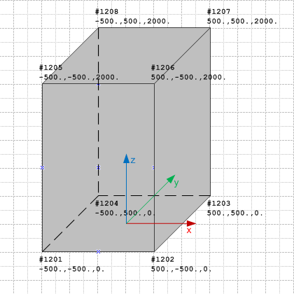

Link to this page
Link to this pageThe block geometry can be expressed using the boundary representation geometry model, expressing it as a faceted boundary representation.
|
 |
Figure E5 shows the block geometry represented by a faceted boundary representation. |
|
Figure E5 — Basic shape represented as brep model |